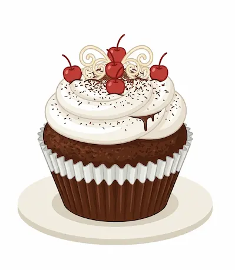

The Heart of the Oven: The Story of Little Lulu’s
There is a specific kind of magic that happens when flour, sugar, and a little bit of patience come together. It’s the scent of caramelizing crusts and the warmth of a kitchen that never quite goes cold. Welcome to Little Lulu’s, where every bite tells a story.

The Little Lulu’s Standard
We believe that you can taste the difference between a "quick fix" and
a loaf that has been crafted with care. At Little Lulu’s, we don't
believe in shortcuts.
Small-Batch Freshness: We bake in limited quantities every day. This
ensures that when you walk through our doors, you are getting the
freshest possible version of your favorite treat.
Inspired Flavors: We love honoring the classics—like the perfect,
flaky scone or a rich vanilla sponge—while occasionally adding a
modern twist that keeps our neighbors coming back for more.
Custom Creations: From tiered wedding cakes to personalized birthday
treats, we take pride in being a part of your life’s biggest moments.